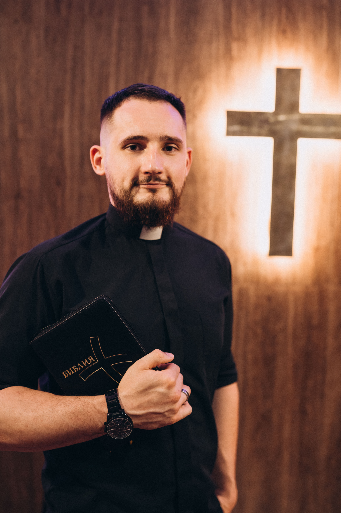

Brama do Nieba
«Жизнь рождает жизнь»

Место, где вы дома
Мы верим, что людям нужно безопасное место, где они чувствуют себя как дома. Место, где можно сложить свои тяготы к ногам Иисуса Христа. Мы приглашаем вас стать частью нашей семьи.
Зачем мы здесь
Мы называем церковь «Brama do nieba», потому что верим: людям нужно безопасное место, где они чувствуют себя как дома. Мы хотим делиться благодатью спасения и учить ценностям жизни в присутствии Святого Духа.

Владимир Горох
С радостью и любовью служим церкви, неся Слово жизни и проповедуя Евангелие в Познани и далеко за её пределами.Переживая любовь Божью в церкви мы учимся ее проявлять по отношению к окружающим.Верим что Бог исцеляет и восстанавливает жизни людей, а так же мы горим желанием делиться христианской жизнью для того что бы расширять пределы Царства Божьего в формировании и открытии церквей по всему миру.
Смотрите богослужение онлайн
Присоединяйтесь к нам каждое воскресенье в 16:00.
Каждое воскресенье — живая встреча с Богом
Воскресенье — это не просто собрание. Это день, когда мы вместе поклоняемся, слышим Слово Божье, молимся друг за друга и строим настоящие отношения.
Общение
Перед служением мы проводим время вместе — кофе, разговоры и атмосфера семьи.
Прославление
Живое поклонение, которое помогает сфокусироваться на Боге и открыть сердце.
Слово
Проповедь, которая говорит в жизнь, укрепляет веру и даёт направление.
Молитва
Мы молимся друг за друга — потому что церковь живёт в единстве.